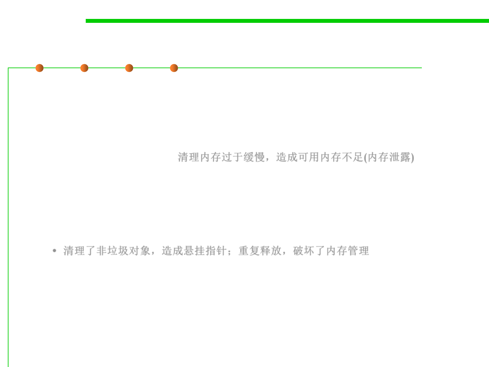

8.1 Metrics, Principles, and Methods of Construction for Performance
Dangers of Explicit Deallocation
▪ With explicit deallocation, the programmer ends up:
– Doing too little
• Garbage objects are not deallocated and slowly but surely clutters memory and
so the program runs out of memory (such a failure to delete garbage objects is
called a memory leak). 清理内存过于缓慢，造成可用内存不足(内存泄露)
– Doing too much
• Throwing away a non-garbage object. Subsequent use of a live reference to the
object will cause the program to fail in inexplicable ways. Such a reference is a
dangling reference.
• Throwing away a garbage object twice! Likely to break the memory manager.
• 清理了非垃圾对象，造成悬挂指针；重复释放，破坏了内存管理